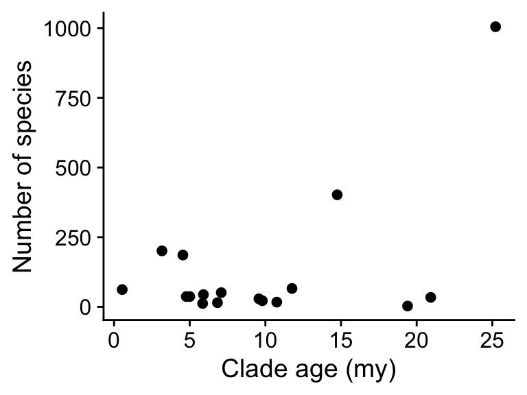
Regression
Are older insect lineages more species rich in Hawaiʻi?
Hylaeus bees
- 700,000 years
- 60-ish species
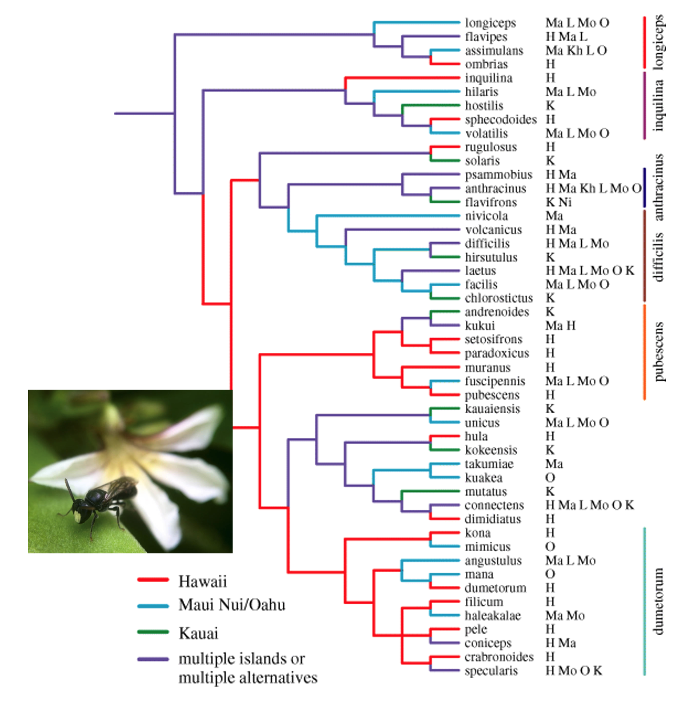
Native Drosophila
- 25 million years
- possibly 1000 species
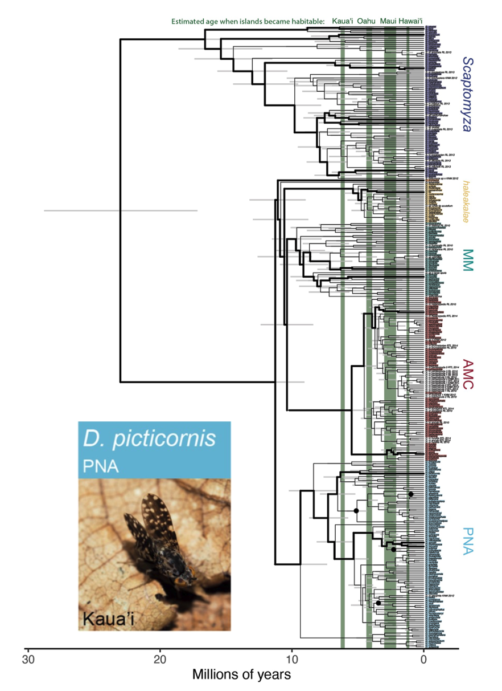
Are older insect lineages more species rich in Hawaiʻi?
Looks like it…a question for correlation
Are older insect lineages more species rich in Hawaiʻi?
Using product-moment correlation, we got a “significant” correlation
Pearson's product-moment correlation
data: hi_insect$clade_age and hi_insect$clade_richness
t = 2.4884, df = 15, p-value = 0.02507
alternative hypothesis: true correlation is not equal to 0
95 percent confidence interval:
0.08093661 0.81059406
sample estimates:
cor
0.5405529 Are older insect lineages more species rich in Hawaiʻi?
The significant correlation means that clade age and number of species have a predictive relationship (I could predict one from the other).
How do we actually predict number of species from clade age?
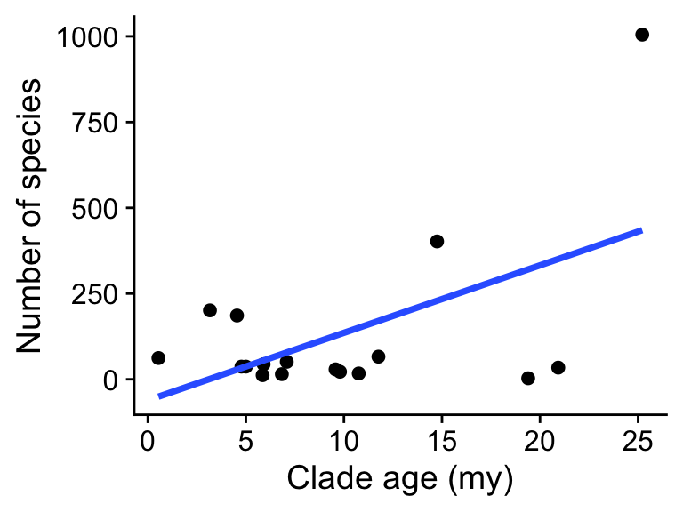
A job for regression
Learning Objectives
- Use linear regression to predict \(Y\) based on \(X\)
- Test the null hypothesis of slope = 0
- Display uncertainty in predictions from a linear regression
- Use diagnostic plots to evaluate if data meet assumptions of regression
Correlation and regression
Correlation: how well we can predict \(Y\) from \(X\)
Parameter: \(\rho\) Estimate: \(r\)
\(r\) is bounded: \([-1, 1]\)
Regression: how the expectation of \(Y\) changes with a change in \(X\)
Parameter: \(\beta\) Estimate: \(b\)
\(\beta\) and \(b\) are the slope
Correlation vs regression: \(r\)
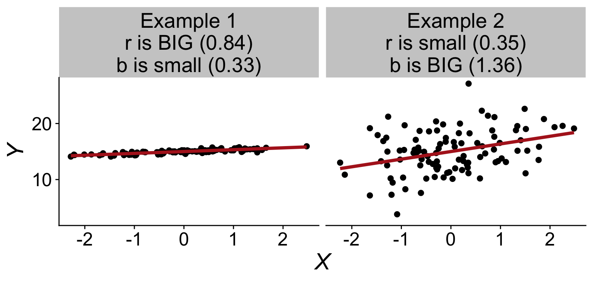
\(r\): how much of the change in \(Y\) is accounted for by the change in \(X\)
Correlation vs regression: \(b\)
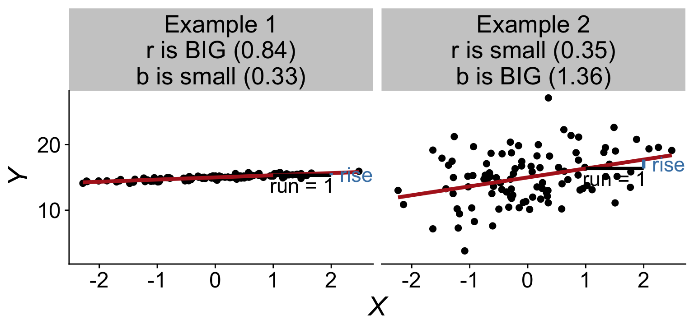
\(b\) is the slope: \(\dfrac{\text{rise}}{\text{run}}\), the change in \(Y\) for a one unit change in \(X\)
Regression vs correlation
Regression
Correlation
is in the units of the original measures
is unitless
can take any value
is bound between \(-1\) and \(1\)
has \(X\) as the “explanatory” and \(Y\) as the “response” variable
has no “explanatory” or “response” variable
generates a formula to predict \(Y\) from \(X\)
does not yield a formula to predict \(Y\) from \(X\)
does not (directly) measure how well \(X\) predicts \(Y\)
measures how reliably \(X\) and \(Y\) move together
Regression: nomenclature overview
\[ \hat{Y}_i = a + bX_i \]
- \(\hat{Y}_i\) is on the \(Y\) axis
- \(X_i\) is on the \(X\) axis
- \(a + bX_i\) is the line

Regression: nomenclature
Each data point has an \(X_i\) and a \(Y_i\)
The circled point is the observed \(Y_i\) at \(X_i\)
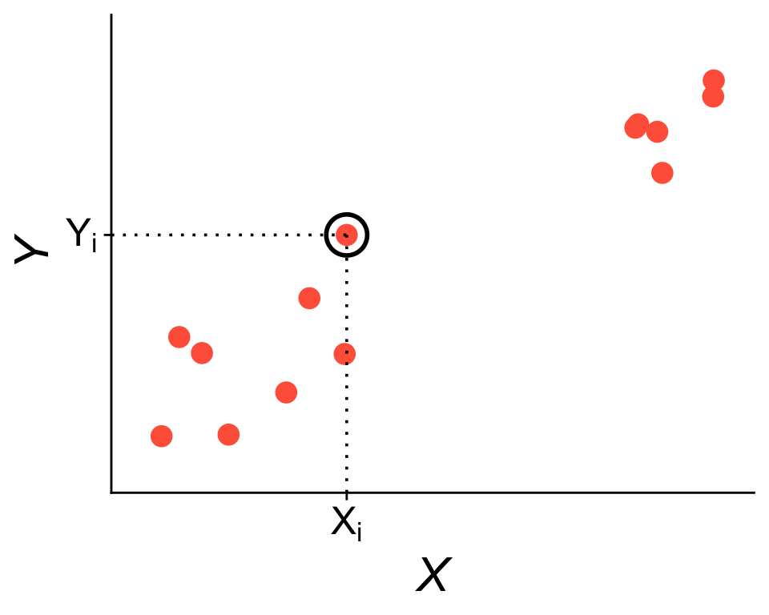
Regression: the prediction
The line gives a prediction for each \(X_i\)
\[ \hat{Y}_i = a + bX_i \]
\(\hat{Y}_i\) is the predicted value of \(Y\) at \(X_i\)
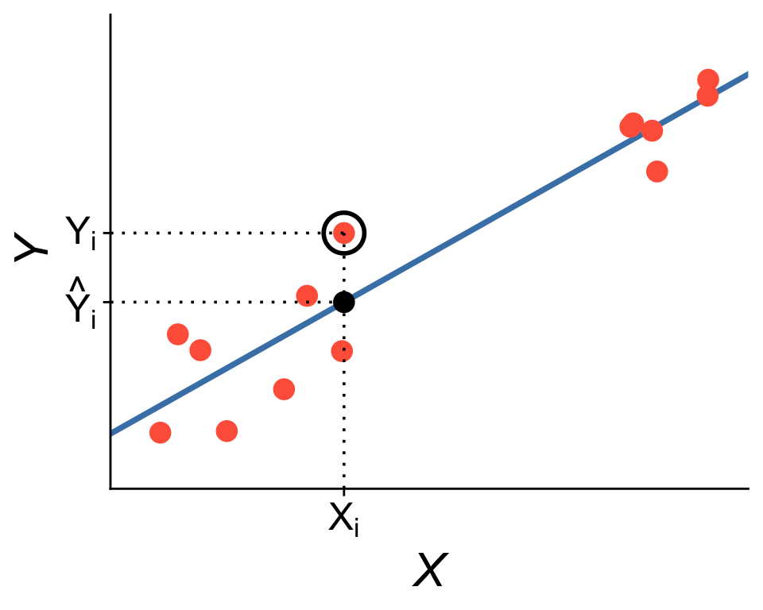
Regression: the intercept
\(a\) is the intercept
The “predicted” \(Y\) for \(X = 0\)
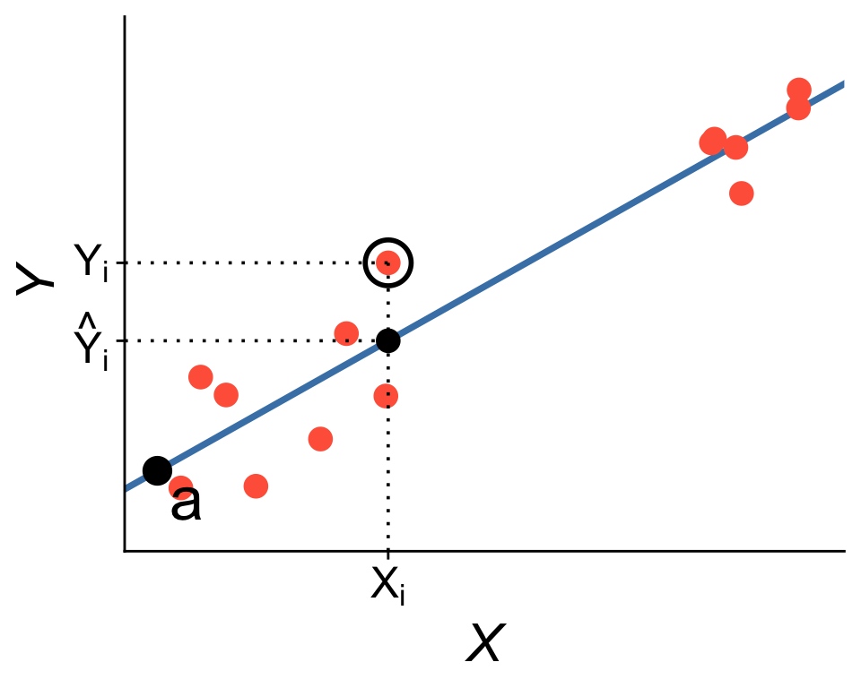
Regression: the slope
\(b\) is the slope
The unit increase in \(Y\) for a one unit increase in \(X\)
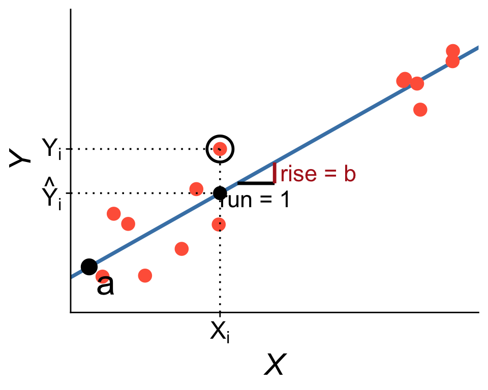
Regression: the residual
\(e_i\) is the “residual” deviation from the predicted value
\[ e_i = Y_i - \hat{Y}_i \]
\(Y_i\) is the data point
\(\hat{Y}_i\) is the prediction for that point
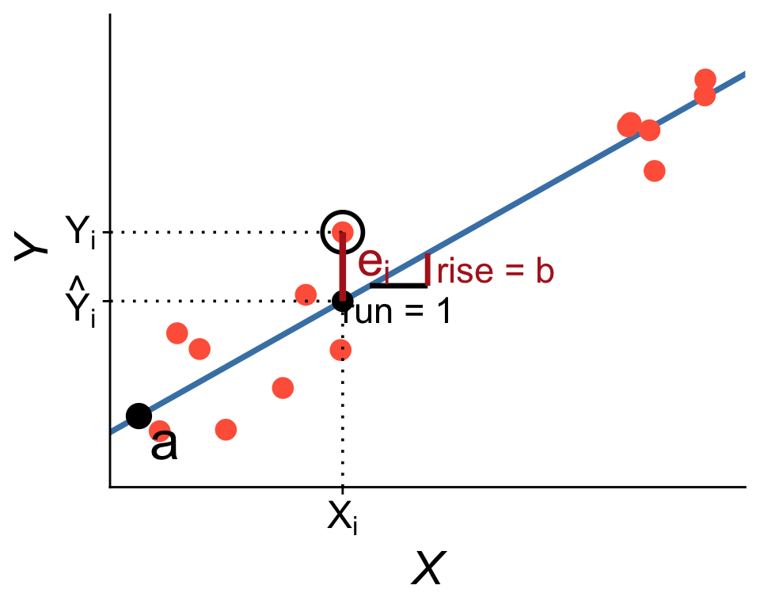
Zoom in on a residual
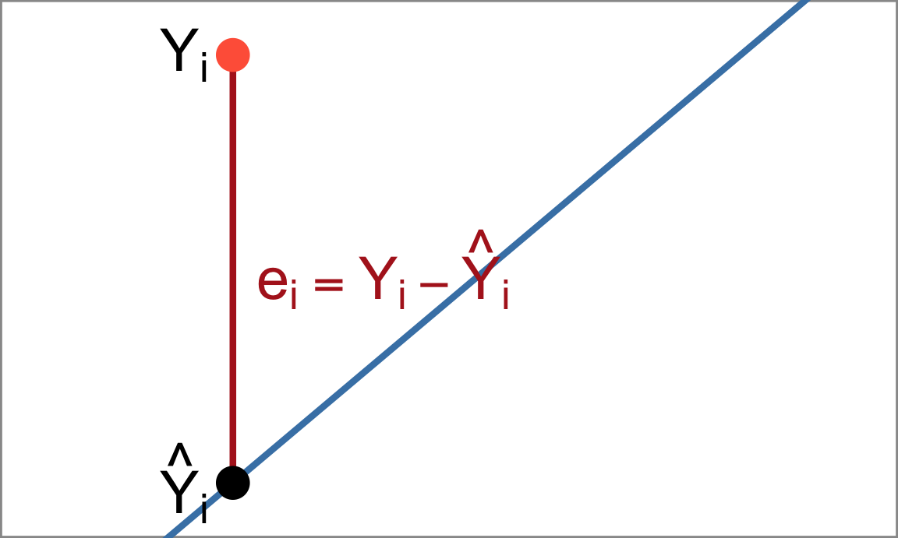
Regression: putting it together
\[ Y_i = a + bX_i + e_i \]
- \(a\) is the intercept: the predicted \(Y\) for \(X = 0\)
- \(b\) is the slope: the unit increase in \(Y\) for a one unit increase in \(X\)
- \(e_i\) is the residual: \(e_i = Y_i - \hat{Y}_i\), where \(\hat{Y}_i = a + bX_i\)
Regression: goals and assumptions
Goal: predict \(Y\) from \(X\)
Assumptions
- Random sample
- \(Y\) is normally distributed with variance independent of \(X\)
In other words, the residuals are normal
- (Linear) regression assumes that the relationship between \(X\) and \(Y\) can be described by a line
Regression does not assume that \(X\) is normally distributed
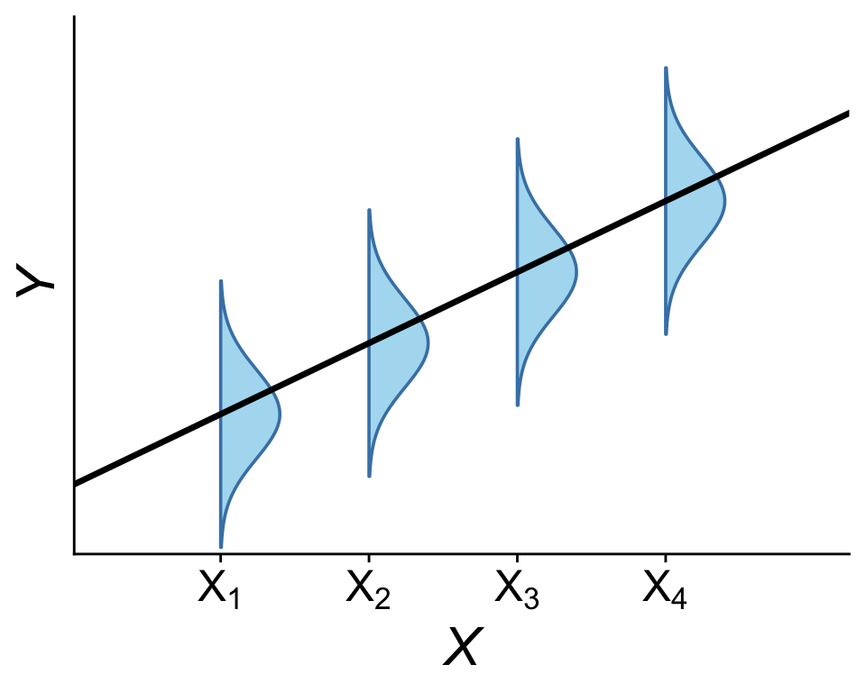
A line cannot describe every relationship
\(Y = aX^b\)
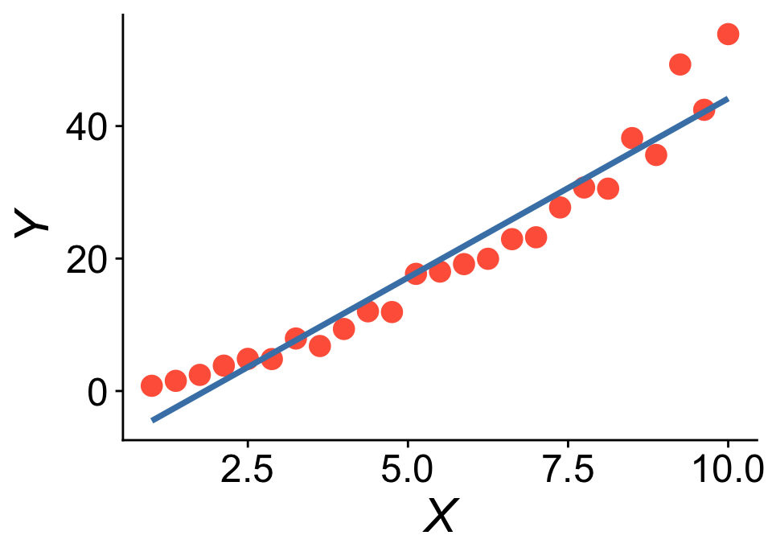
A line can’t capture this curve…we will come back to what we can do
Residuals
The difference between the value (\(Y_i\)) and the prediction (\(\hat{Y}_i\)) is called the residual (\(e_i\))
\[ e_i = Y_i - \hat{Y}_i \]
| \(i\) | \(X_i\) | \(Y_i\) | \(\hat{Y}_i\) |
|---|---|---|---|
| 1 | 6 | 0.8 | 0.74 |
| 2 | 7 | 1 | 1.28 |
| 3 | 8 | 2.2 | 1.82 |
| 4 | 9 | 2.2 | 2.36 |
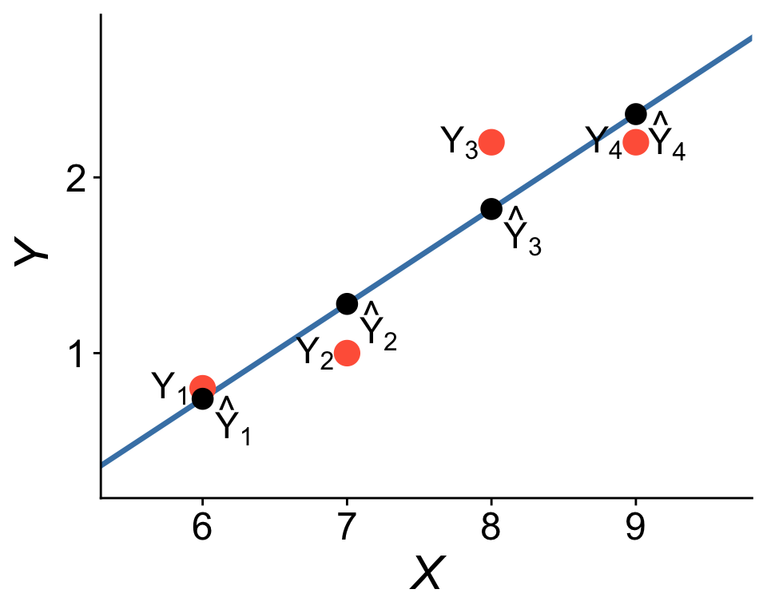
Residuals: \(e_i = Y_i - \hat{Y}_i\)
| \(i\) | \(X_i\) | \(Y_i\) | \(\hat{Y}_i\) | \(e_i\) |
|---|---|---|---|---|
| 1 | 6 | 0.8 | 0.74 | 0.06 |
| 2 | 7 | 1 | 1.28 | -0.28 |
| 3 | 8 | 2.2 | 1.82 | 0.38 |
| 4 | 9 | 2.2 | 2.36 | -0.16 |
Points above the line have positive residuals, points below have negative residuals
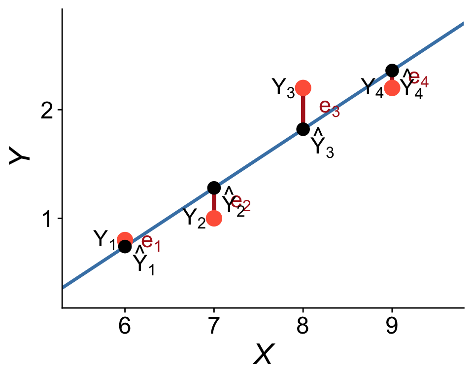
Method of least squares
In linear regression, we find the line that “best fits” the data
But what criterion defines the “best fit”?
The “best fit” line minimizes the sum of squared residuals
\[ \text{minimize } \sum_{i = 1}^{n} (Y_i - \hat{Y}_i)^2 = \sum_{i = 1}^{n} e_i^2 = SS_{resid} \]
The equations on the following slides solve this
Least squares: attempt 1
A line with the wrong slope
The residuals are large, so \(\sum e_i^2\) is large
\(SS_{resid} =\) 518.7
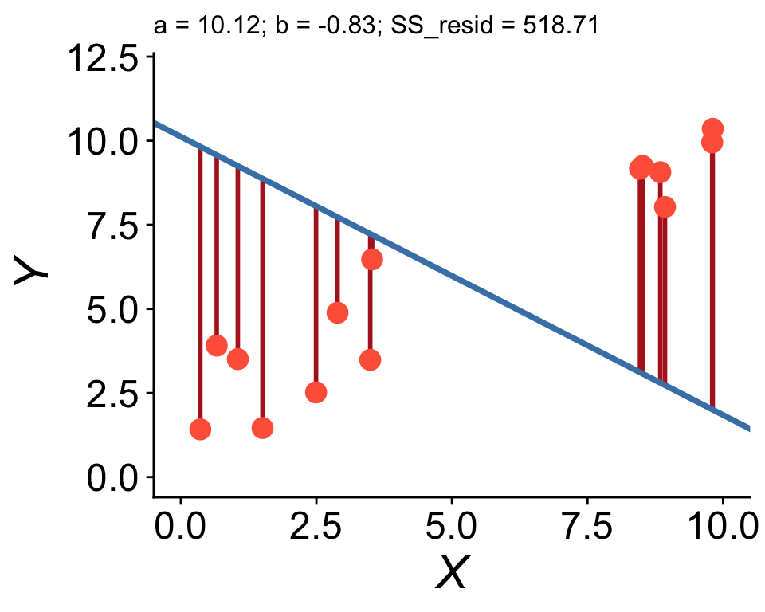
Least squares: attempt 2
A flat line
The residuals are smaller, so \(\sum e_i^2\) is mid
\(SS_{resid} =\) 140.8
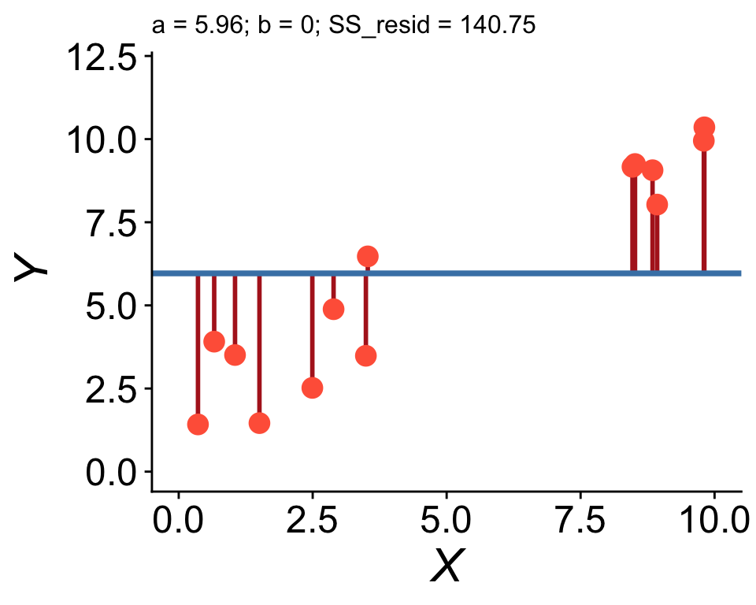
Least squares: attempt 3
A line close to every point
The residuals are small, so \(\sum e_i^2\) is small
\(SS_{resid} =\) 14.8
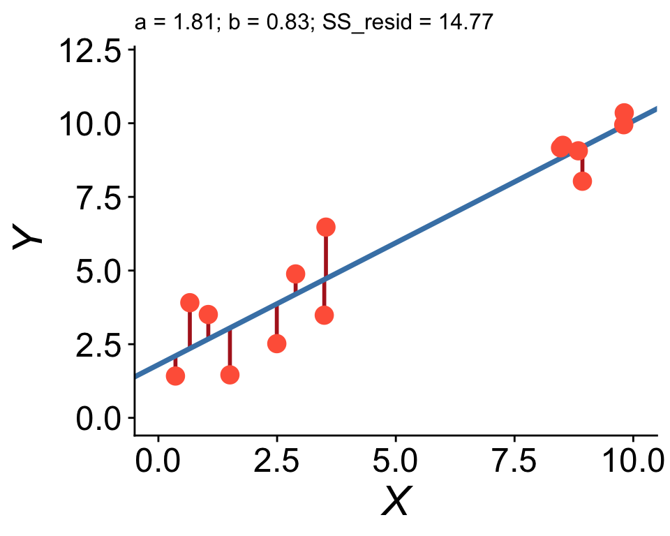
Least squares: the best slope minimizes \(SS_{resid}\)
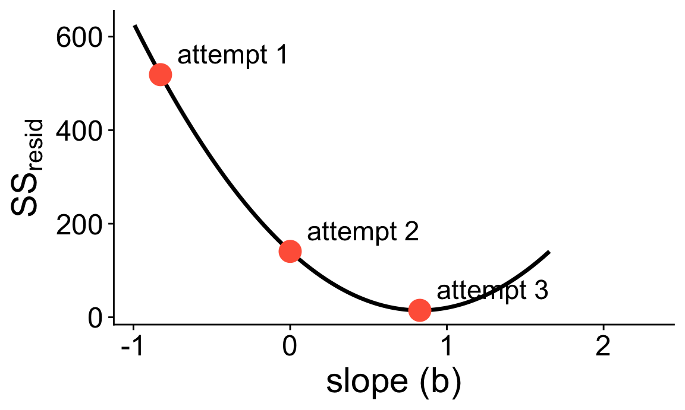
The “regression coefficient”, \(b\)
The slope, \(b\), describes the expected change in the response variable for each change in the explanatory variable
\[ b = \frac{\overbrace{\text{sample covariance}_{X,Y}}^{\text{rise}}}{\underbrace{s_X^2}_{\text{run}}} = \frac{\sum_{i = 1}^{n} (X_i - \overline{X})(Y_i - \overline{Y})}{\sum_{i = 1}^{n} (X_i - \overline{X})^2} \]
The “regression coefficient”, \(b\)
\(b\) is an estimate of the true parameter, \(\beta\)
\[ \beta = \frac{\text{Cov}_{X,Y}}{\sigma_X^2} \]
\(b\) is an unbiased estimate of \(\beta\)
Compare to the correlation coefficient
\[ r = \frac{\text{sample covariance}_{X,Y}}{s_X s_Y} \]
Same numerator, different denominator
\[ b = r \, \frac{s_Y}{s_X} \]
\(b\) carries the units of \(Y\) per unit of \(X\), \(r\) is unitless
Example slopes
\(Y = \alpha + \beta X\)
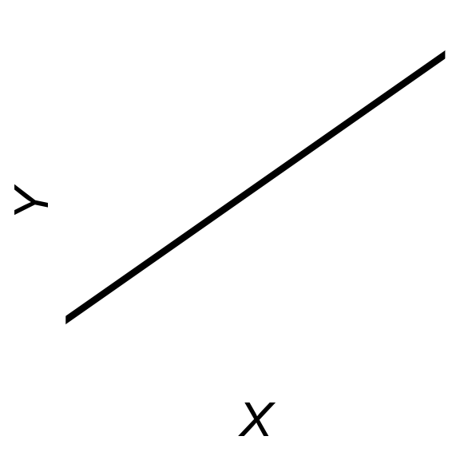
Positive slope, \(\beta > 0\)
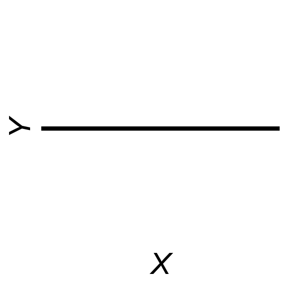
Slope = 0, \(\beta = 0\)
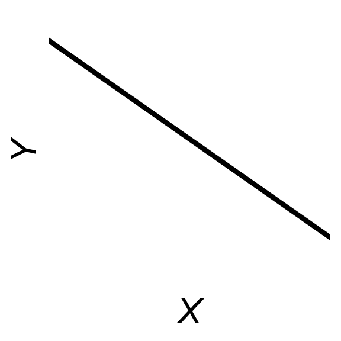
Negative slope, \(\beta < 0\)
Example intercepts
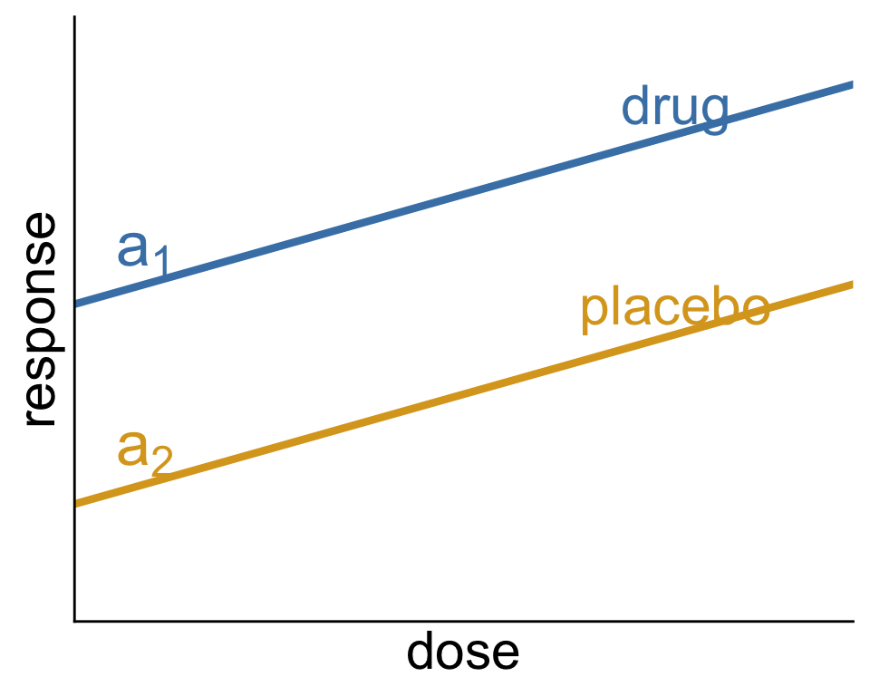
Different intercepts, \(\alpha_1 > \alpha_2\)
\[ Y_i = \begin{cases} a_1 + bX_i + e_i & \text{if drug} \\ a_2 + bX_i + e_i & \text{if placebo} \end{cases} \]
Dating a lava flow with radiocarbon
Charcoal from forests burned by Mauna Loa and Kīlauea lava holds \(^{14}\)C
After the trees die, \(^{14}\)C decays: charcoal under older flows is more depleted
Can we predict the age of a flow from the \(^{14}\)C depletion in charcoal buried beneath it?
Simulated data
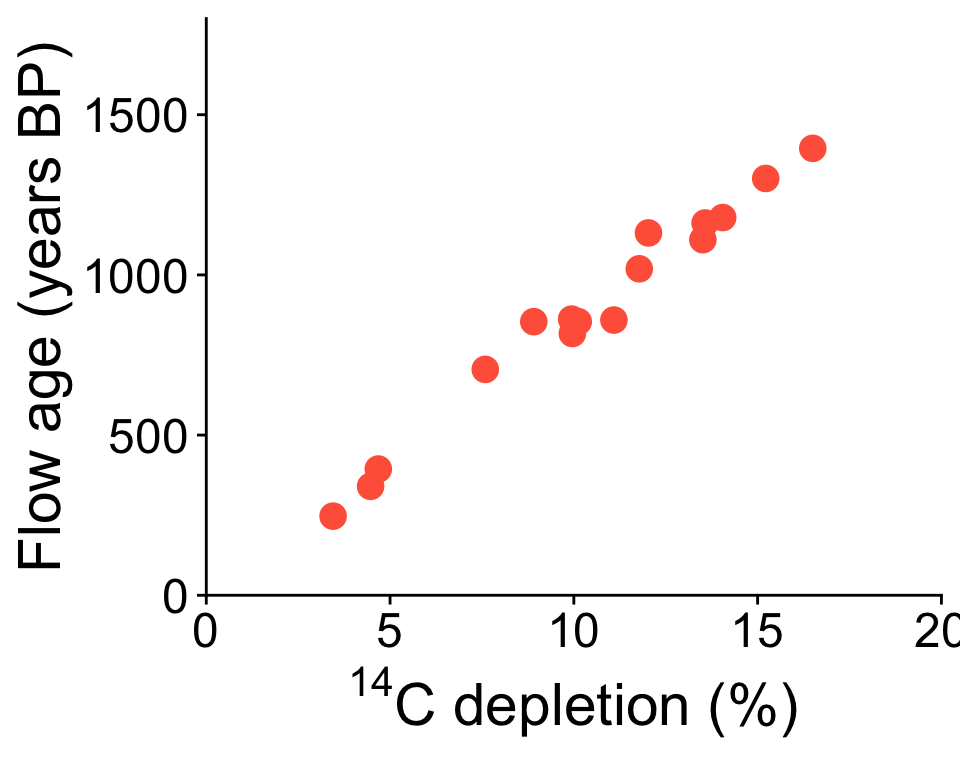
Predicting the age of a flow
For a new flow we measure \(X\), the \(^{14}\)C depletion
We need \(\hat{Y}\), the predicted age
The line gives us a way to get from \(X\) to \(\hat{Y}\)

Building a linear model in R with lm()
eruption_ageis a column of the data (the response, \(Y\))c14_depletionis a column of the data (the explanatory variable, \(X\))lava_datais thedata.frameholding both columns
The fitted model
Call:
lm(formula = eruption_age ~ c14_depletion, data = lava_data)
Coefficients:
(Intercept) c14_depletion
-9.153 86.148 \[ \hat{Y}_i = -9.2 + 86.1 X_i \]
Predicting \(Y\) from \(X\)
Predicted age \(=\) -9.2 \(+\) 86.1 \(\times\) (\(^{14}\)C depletion)
We can think of the regression line as offering “predictions” (i.e., best guesses) for points not in our data set
If charcoal under an undated flow has \(^{14}\)C depletion equal to 10%, what is its predicted age? (check the graph)
Predicting \(Y\) from \(X\)
Plug \(X = 10\) into the equation
\[ \hat{Y} = -9.2 + 86.1 \times 10 = 852 \]
The predicted age is about 852 years BP
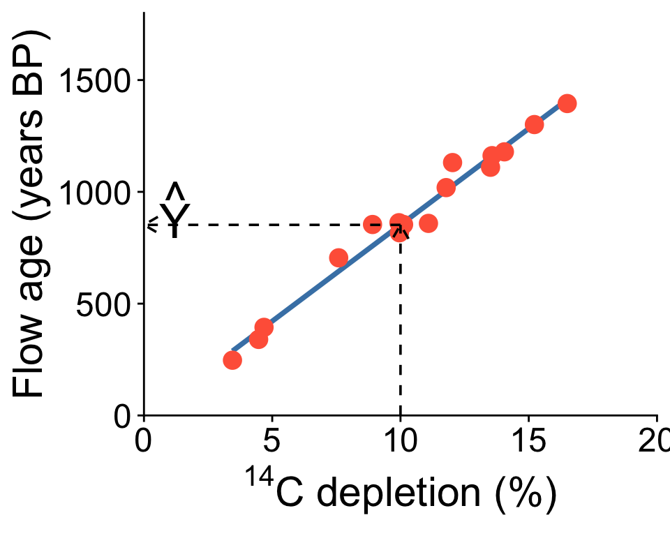
Visualizing residuals: lava flow data
The residual, \(e_i\), is the difference between an observed (\(Y_i\)) and a predicted (\(\hat{Y}_i\)) value
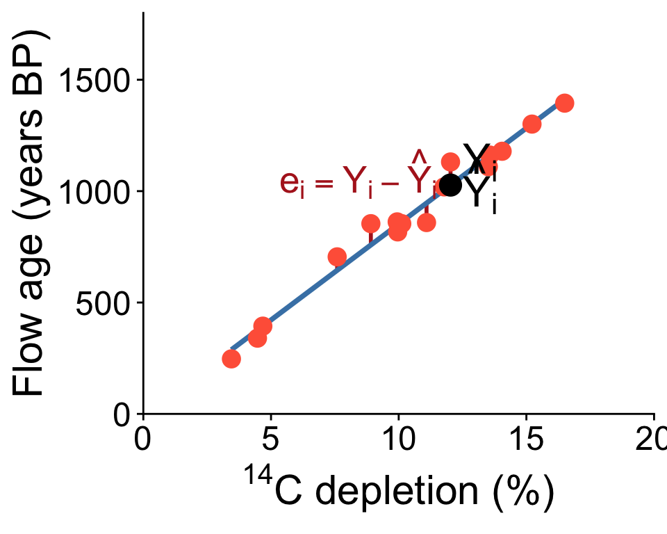
Do the data fit regression assumptions? (1 of 2)
Examine residuals vs fitted values
Are the residuals, and their variance, independent of the predictions, \(\hat{Y}\)?
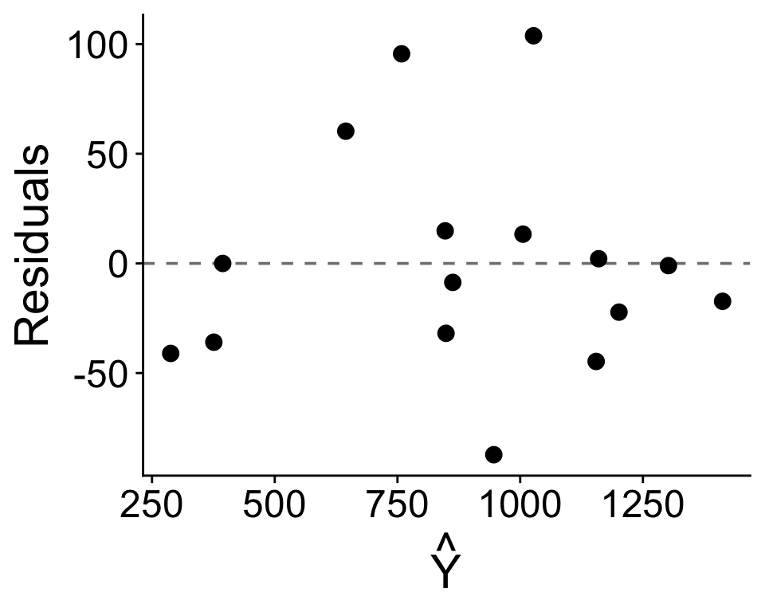
Residuals vs fitted: the relationship is not linear
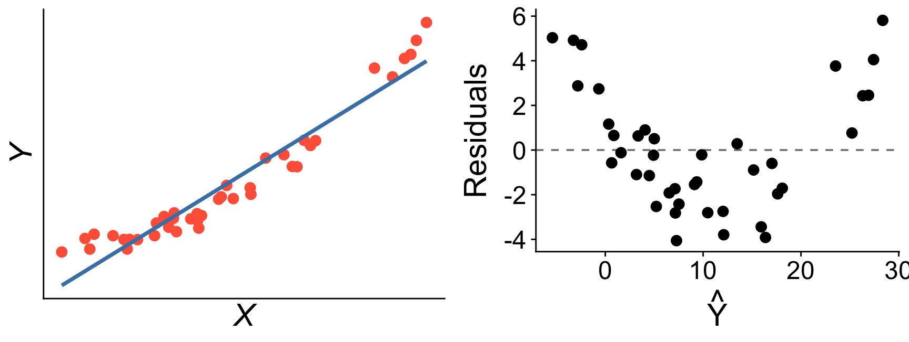
The residuals show a pattern: a line was the wrong shape
Residuals vs fitted: the variance is not equal
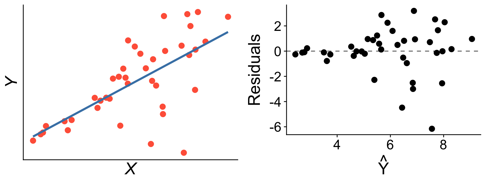
The spread of the residuals changes with \(\hat{Y}\): unequal variance
Do the data fit regression assumptions? (2 of 2)
Examine the QQ-plot
Do the points (roughly) fall on a line?
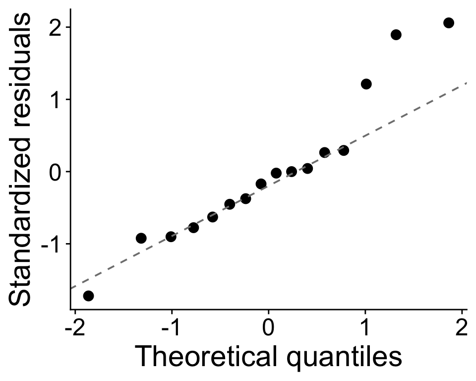
Break!
Showing steps for calculating regression models
Make some fake tooth decay data
Showing steps for calculating regression models
Make some fake tooth decay data
Showing steps for calculating regression models
Plot it
Showing steps for calculating regression models
Make a linear model
Showing steps for calculating regression models
Get info on null hypothesis tests
Call:
lm(formula = dateOfBirth ~ deltaC14, data = tooth.data)
Residuals:
Min 1Q Median 3Q Max
-10.785 -5.030 -1.830 2.836 22.086
Coefficients:
Estimate Std. Error t value Pr(>|t|)
(Intercept) 1994.95843 3.66495 544.335 < 2e-16 ***
deltaC14 -0.06529 0.01300 -5.024 0.000125 ***
---
Signif. codes: 0 '***' 0.001 '**' 0.01 '*' 0.05 '.' 0.1 ' ' 1
Residual standard error: 9.202 on 16 degrees of freedom
Multiple R-squared: 0.612, Adjusted R-squared: 0.5878
F-statistic: 25.24 on 1 and 16 DF, p-value: 0.0001247Notice that F-statistics stuff, we’ll get there! But not yet
Showing steps for calculating regression models
Get confidence intervals of coefficient estimates